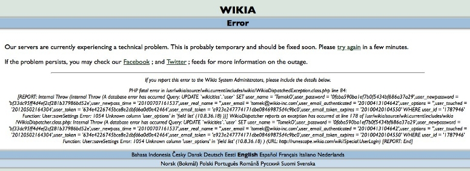
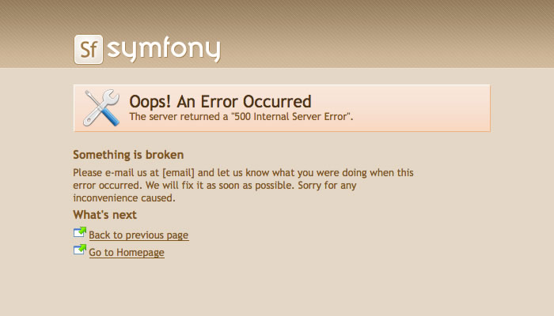
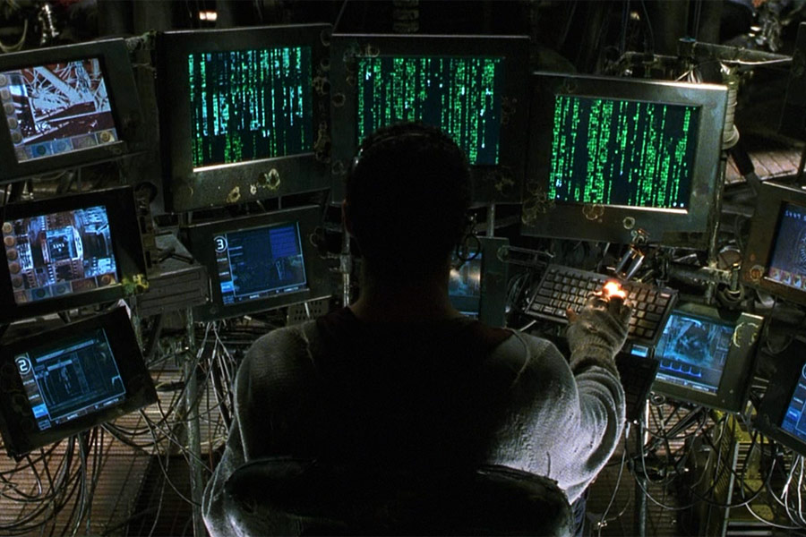
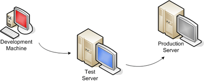
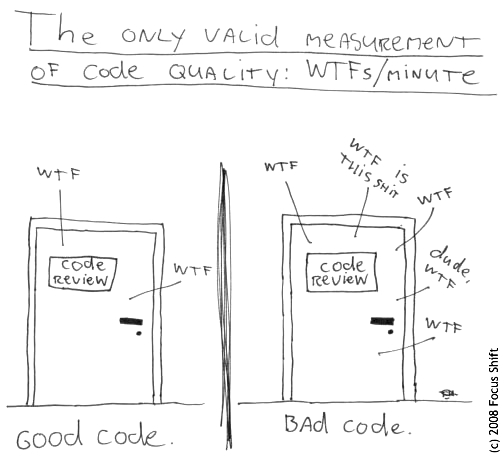

Fatal error
Andrzej 'nAndy' Łukaszewski, Wikia Inc.
AKAI, 8 maja, 2012
{kind=link}
Kim jestem?
- Junior Application Developer @Wikia
- nandy@wikia-inc.com
- @nandy_andy
- http://blog.lukaszewski.it
Plan prezentacji
- Wprowadzenie
- Dlaczego powinniśmy interesować się błędami?
- Typy błędów
- Obsługa błędów
- Co jeszcze można zrobić?
-
As soon as we started programming, we found to our surprise that it wasn't as easy to get programs right as we had thought. (...) a good part of my life was going to be spent finding errors in my own programs.
Sir Maurice Wilkes
Dlaczego powinniśmy interesować się błędami?
Błędy w naszych programach są czymś nie pożądanym ze względu na:
- koszty jakie generują: koszty ekonomiczne i uruchomieniowe,
- luki w systemie jakie tworzą,
- ryzyko zepsucia się systemu lub jego całkowitego zniszczenia,
- błędy kaskadowe (ang. cascading failure).
Typy błędów w PHP
Podręcznik PHP
-
Błędy parsera/składniowe E_PARSER
PHP Parse error: syntax error, unexpected '=' in test.php on line 2
-
Notices E_NOTICE
PHP Notice: Undefined offset: 0 in test.php on line 4
-
Ostrzeżenia (warnings) E_WARNING
PHP Warning: Invalid argument supplied for foreach() in test.php
on line 3 -
Błędy krytyczne (fatal errors) E_ERROR
PHP Fatal error: Call to undefined function nothing() in test.php on line 3
-
Wyjątki (exceptions)
PHP Fatal error: Uncaught exception 'Exception'
with message 'an exception' in test.php:3
Życie
-
<?php function getMyArrayData() { $data = $memc->get('my-data-in-memc'); if( is_null($data) ) { $data = $mysql->selectMyDataFromDB(); $memc->set('my-data-in-memc', $data); } return $data; } ?>
-
<?php function getMyArrayData() { $data = $memc->get('my-data-in-memc'); if( empty($data) ) { $data = $mysql->selectMyDataFromDB(); $memc->set('my-data-in-memc', $data); } return $data; } ?>
-
<?php function getMyArrayData() { $data = $memc->get('my-data-in-memc'); if( empty($data) ) { //what if $mysql->selectMyDataFromDB() returns array()? $data = $mysql->selectMyDataFromDB(); $memc->set('my-data-in-memc', $data); } return $data; } ?>
Obsługa błędów w PHP
php.ini
- dyrektywa
error_reportingdomyślnie:E_ALL & ~E_NOTICE - w PHP5 nowa wartość:
E_STRICT - dyrektywa
display_errorsdomyślnie:"1" - dyrektywa
log_errorsdomyślnie:"0" - dyrektywa
error_logdomyślnie:NULL
Funkcje
int error_reporting ([ int $level ] )
mixed set_error_handler ( callable $error_handler [, int $error_types = E_ALL | E_STRICT ] )
callable set_exception_handler ( callable $exception_handler )
array debug_backtrace ( [ int $options = DEBUG_BACKTRACE_PROVIDE_OBJECT [, int $limit = 0 ]] )
Przykład użycia
error_reporting = -1 display_errors = "0" log_errors = "1" error_log = '/var/www/log/php'
Przykład użycia
Bootstrap.php
public function __construct($application) {
parent::__construct($application);
MyApp_Error_Handler::set();
}
library/MyApp/Error/Handler.php
class MyApp_Error_Handler {
public static function handle($errno, $errstr, $errfile, $errline) {
if (!error_reporting()) return;
throw new Exception($errstr . " in $errfile:$errline". $errno);
}
public static function set() {
set_error_handler(array(__CLASS__, 'handle'));
}
}
Przykład użycia
Przykład użycia
Co jeszcze można zrobić?
Monitoring
Podział środowisk cz.1
- system wersjonowania danych (SVN, GIT, Mercurial),
- deweloperzy pracują na katalogu trunk w ciągu tygodnia,
- raz w tygodniu z katalogu trunk tworzony jest nowy katalog release.xyz i trafia na serwer testowy,
- po dwóch dniach z maszyny testowej kod trafia na produkcje.
Podział środowisk: Slim framework
$_ENV['SLIM_MODE'] = 'production';
$app = new Slim(array(
'mode' => 'production'
));
$app->configureMode('production', function () use ($app) {
$app->config(array(
'log.enable' => true,
'log.path' => '../logs',
'debug' => false
));
});
$app->configureMode('development', function () use ($app) {
$app->config(array(
'log.enable' => false,
'debug' => true
));
});
Podział środowisk: Symfony, Zend frameworks
- Symfony:
app/config/config_dev.yml,app/config/config_prod.yml - Zend:
application/configs/application.ini [production] phpSettings.display_startup_errors = 0 phpSettings.display_errors = 0 includePaths.library = APPLICATION_PATH "/../library" bootstrap.path = APPLICATION_PATH "/Bootstrap.php" bootstrap.class = "Bootstrap" appnamespace = "Application" resources.frontController.controllerDirectory = APPLICATION_PATH "/controllers" resources.frontController.params.displayExceptions = 0 [development : production] phpSettings.display_startup_errors = 1 phpSettings.display_errors = 1
Testy jednostkowe
Even good programmers make mistakes. The difference between a good programmer and a bad programmer is that the good programmer uses tests to detect his mistakes as soon as possible.phpunit.de
array array_slice ( array $array, int $offset [, int $length = NULL [, bool $preserve_keys = false ]] )
Code review
Dziękuję za uwagę! (przydatne linki)
Debugging Production Systems by Bryan Cantrill:
http://www.infoq.com/presentations/Debugging-Production-Systems
Podręcznik PHP:
http://www.php.net/manual/pl/
Podręcznik PHPUnit:
http://www.phpunit.de/manual/current/en/index.html
Prezentacja:
http://slides.wikia.net/akai/20120508/phpFatalError/